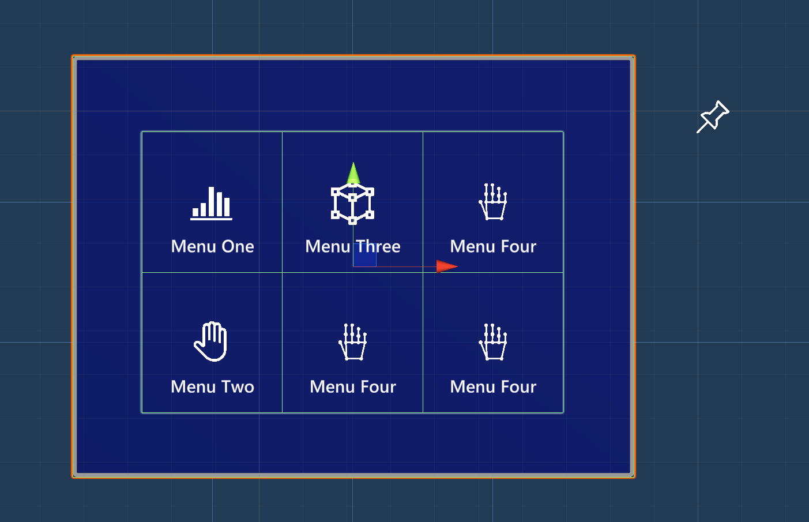

Near Menu (ニア メニュー)

Near Menu は、ボタンなどの UI コンポーネントの集まりを提供する UX コントロールです。ユーザーの体の周りに浮かんでいて、いつでも簡単にアクセスできます。ユーザーと疎結合しているので、ターゲット コンテンツとユーザーとのインタラクションを妨げることはありません。ユーザーは「Pin」ボタンを使ってメニューをワールドロック/アンロックすることができます。メニューは掴んで特定の位置に配置することができます。
インタラクションの動作
- タグアロング: メニューはニア インタラクションのために、あなたについてきてユーザーから 30〜60cm の範囲内にとどまります。
- ピン: 「Pin」ボタンを使うと、メニューをワールドロックにしたりロックを解除したりできます。
- グラブと移動: メニューはいつでも掴んで動かすことができます。前の状態に関わらず、メニューを掴んで離すと固定 (ワールドロック) されます。把持可能な領域には視覚的な手がかりがあります。手を近づけると表示されます。

プレハブ
Near Menu のプレハブは MRTK の様々なコンポーネントを使用してニア インタラクションのためのメニューを構築する方法をデモンストレーションするために設計されています。
- NearMenu2x4.prefab
- NearMenu3x1.prefab
- NearMenu3x2.prefab
- NearMenu3x3.prefab
- NearMenu4x1.prefab
- NearMenu4x2.prefab
サンプル シーン
Near Menu プレハブのサンプルは、NearMenuExamples シーンで見ることができます。

構造
Near Menu プレハブは以下の MRTK コンポーネントで出来ています。
- PressableButtonHoloLens2 プレハブ
- Grid Object Collection: グリッド状の複数ボタンのレイアウト
- Manipulation Handler: メニューの把持と移動
- RadialView Solver: Follow Me (タグアロング) の動作

カスタマイズ方法
1. Button の追加/削除
ButtonCollection オブジェクト以下で、ボタンを追加または削除します。

2. Grid Object Collection の更新
インスペクターで ButtonCollection オブジェクトの Update Collection ボタンをクリックします。グリッド レイアウトが更新されます。

Grid Object Collection の Rows プロパティを使って行の数を設定できます。

3. バックプレートのサイズ調整
Backplate オブジェクトの下の Quad のサイズを調整します。バックプレートの幅と高さは 0.032 * [ボタンの数 + 1] とします。例えば、ボタンが 3 × 2 個ある場合、バックプレートの幅は 0.032 * 4、高さは 0.032 * 3 となります。この式は Unity のフィールドに直接入力することができます。

- HoloLens 2 ボタンのデフォルト サイズは 3.2x3.2 cm (0.032m) です。